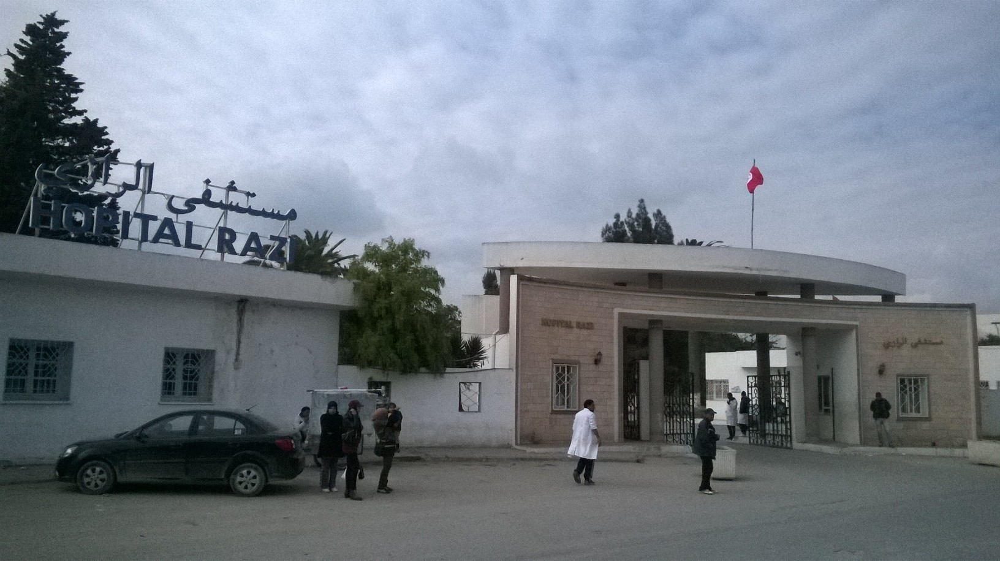
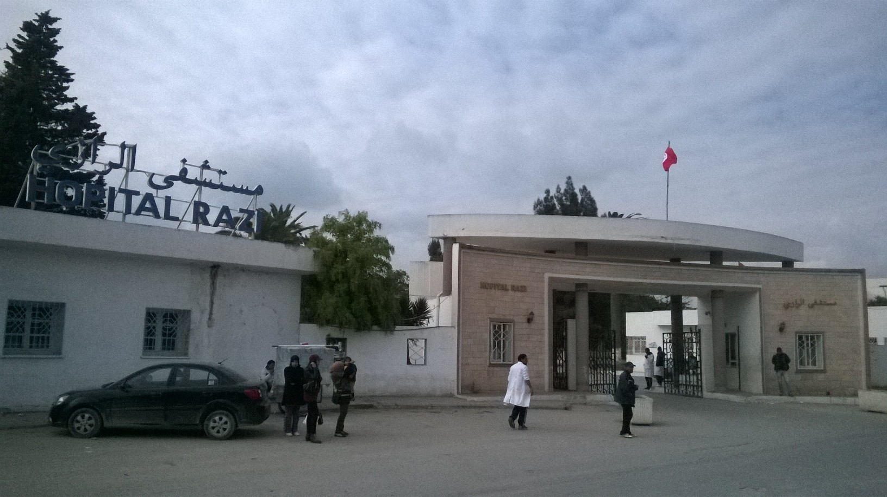

La ville de La Manouba est située au Nord-Est de la Tunisie. Son territoire est délimité par Oued Ellil à l'Ouest, Douar Hicher au Nord, et le gouvernorat de Tunis à l'Est et au sud.La Manouba est une ville de la banlieue nord-ouest de Tunis (capitale de la Tunisie) et le chef-lieu du gouvernorat du même nom.

La municipalité de la Manouba, créée en vertu du décret du 23 juillet 1942, est considérée parmi les municipalités les plus anciennes du Grand Tunis. Elle compte une population de 32 029 habitants en 2014

Tebourba, située dans la vallée du seul fleuve pérenne de Tunisie, a, dès l'époque antique, une vocation agricole basée sur la production de blé, d'huile d'olive et de vin.Fortement développée sous la période du protectorat français, la viticulture connaît un renouveau à travers la production d'une AOC, les Coteaux de Tebourba, pour la production de vins rouges et rosés dont le plus célèbre est le Magon.


 
